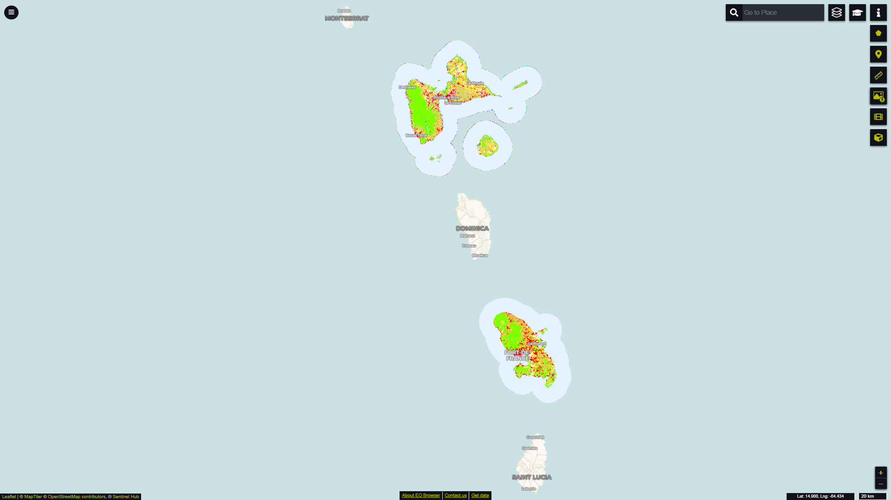
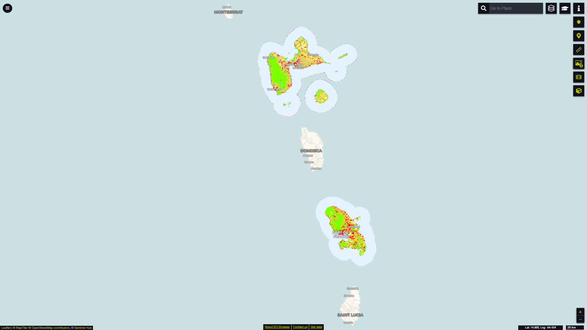

CORINE Land Cover
Short description
In 1985 the 'Coordination of Information on the Environment' (CORINE) programme was initiated by the European Commission. It aimed at collecting environmental information on high priority topics for the European Union (air, water, soil, land cover, coastal erosion, biotopes, etc.). Since 1994, the established databases and programmes are managed by the European Environment Agency (EEA).The CORINE Land Cover (CLC) inventory is a vector-based dataset that consists of 44 land cover and land use classes (Table 2) derived from a series of satellite missions since it was first established (Table 1).Table 1: The evolution of CORINE Land Cover (source).| CLC1990 |
CLC2000 |
CLC2006 |
CLC2012 |
CLC2018 |
|
|---|---|---|---|---|---|
| Satellite data |
Landsat-5 MSS/TM single date |
Landsat-7 ETM single date |
SPOT-4/5 and IRS P6 LISS III dual date |
IRS P6 LISS III and RapidEye dual date |
Sentinel-2 and Landsat-8 for gap filling |
| Time consistency |
1986-1998 |
2000 +/- 1 year |
2006+/- 1 year |
2011-2012 |
2017-2018 |
| Geometric accuracy, satellite data |
≤ 50 m |
≤ 25 m |
≤ 25 m |
≤ 25 m |
≤ 10 m (Sentinel-2) |
| Min. mapping unit/width |
25 ha / 100m |
25 ha / 100m |
25 ha / 100m |
25 ha / 100m |
25 ha / 100 m |
| Geometric accuracy, CLC |
100 m |
better than 100 m |
better than 100 m |
better than 100 m |
better than 100 m |
| Geometric accuracy, CLCThematic accuracy, CLC |
≥ 85% (probably not achieved) |
≥ 85% (achieved) [13] |
≥ 85% |
≥ 85% (probably achieved) |
≥ 85% |
| Change mapping (CHA) |
not implemented |
boundary displacement min. 100 m; change area for existing polygons ≥ 5 ha; for isolated changes ≥ 25 ha |
boundary displacement min.100 m; all changes ≥ 5 ha are to be mapped |
boundary displacement min.100 m; all changes ≥ 5 ha are to be mapped |
boundary displacement min.100 m; all changes ≥ 5 ha are to be mapped |
| Thematic accuracy, CHA |
- |
not checked |
≥ 85% (achieved) |
≥ 85% |
≥ 85% |
| Production time |
10 years |
4 years |
3 years |
2 years |
1.5 years |
| Documentation |
incomplete metadata |
standard metadata |
standard metadata |
standard metadata |
standard metadata |
| Access to the data (CLC, CHA) |
unclear dissemination policy |
dissemination policy agreed from the start |
free access for all users |
free access for all users |
free access for all users |
| Number of countries involved |
26 (27 with late implementation) |
30 (35 with late implementation) |
38 |
39 |
39 |
Band information
The band values correspond to a land cover and land use classification scheme with class values ranging from 0 to 44. Please see the nomenclature and coloring scheme in the table below. For more details about the classes, please see the official CORINE Land Cover nomenclature guidelines or the illustrated nomenclature guidelines document.A visualisation script can be found in our custom scripts repository.Table 2: CORINE Land Cover nomenclature and colouring scheme.| Value | Color | Color Code | Label |
|---|---|---|---|
| 1 | #e6004d | 111 - Continuous urban fabric | |
| 2 | #ff0000 | 112 - Discontinuous urban fabric | |
| 3 | #cc4df2 | 121 - Industrial or commercial units | |
| 4 | #cc0000 | 122 - Road and rail networks and associated land | |
| 5 | #e6cccc | 123 - Port areas | |
| 6 | #e6cce6 | 124 - Airports | |
| 7 | #a600cc | 131 - Mineral extraction sites | |
| 8 | #a64d00 | 132 - Dump sites | |
| 9 | #ff4dff | 133 - Construction sites | |
| 10 | #ffa6ff | 141 - Green urban areas | |
| 11 | #ffe6ff | 142 - Sport and leisure facilities | |
| 12 | #ffffa8 | 211 - Non-irrigated arable land | |
| 13 | #ffff00 | 212 - Permanently irrigated land | |
| 14 | #e6e600 | 213 - Rice fields | |
| 15 | #e68000 | 221 - Vineyards | |
| 16 | #f2a64d | 222 - Fruit trees and berry plantations | |
| 17 | #e6a600 | 223 - Olive groves | |
| 18 | #e6e64d | 231 - Pastures | |
| 19 | #ffe6a6 | 241 - Annual crops associated with permanent crops | |
| 20 | #ffe64d | 242 - Complex cultivation patterns | |
| 21 | #e6cc4d | 243 - Land principally occupied by agriculture with significant areas of natural vegetation | |
| 22 | #f2cca6 | 244 - Agro-forestry areas | |
| 23 | #80ff00 | 311 - Broad-leaved forest | |
| 24 | #00a600 | 312 - Coniferous forest | |
| 25 | #4dff00 | 313 - Mixed forest | |
| 26 | #ccf24d | 321 - Natural grasslands | |
| 27 | #a6ff80 | 322 - Moors and heathland | |
| 28 | #a6e64d | 323 - Sclerophyllous vegetation | |
| 29 | #a6f200 | 324 - Transitional woodland-shrub | |
| 30 | #e6e6e6 | 331 - Beaches - dunes - sands | |
| 31 | #cccccc | 332 - Bare rocks | |
| 32 | #ccffcc | 333 - Sparsely vegetated areas | |
| 33 | #000000 | 334 - Burnt areas | |
| 34 | #a6e6cc | 335 - Glaciers and perpetual snow | |
| 35 | #a6a6ff | 411 - Inland marshes | |
| 36 | #4d4dff | 412 - Peat bogs | |
| 37 | #ccccff | 421 - Salt marshes | |
| 38 | #e6e6ff | 422 - Salines | |
| 39 | #a6a6e6 | 423 - Intertidal flats | |
| 40 | #00ccf2 | 511 - Water courses | |
| 41 | #80f2e6 | 512 - Water bodies | |
| 42 | #00ffa6 | 521 - Coastal lagoons | |
| 43 | #a6ffe6 | 522 - Estuaries | |
| 44 | #e6f2ff | 523 - Sea and ocean | |
| 48 | #ffffff | 999 - NODATA |
More information
 CORINE Land Cover dataset over the Alps in EO Browser.CORINE Land Cover dataset over Guadeloupe and Martinique, two French DOMs, in EO Browser.
CORINE Land Cover dataset over the Alps in EO Browser.CORINE Land Cover dataset over Guadeloupe and Martinique, two French DOMs, in EO Browser.